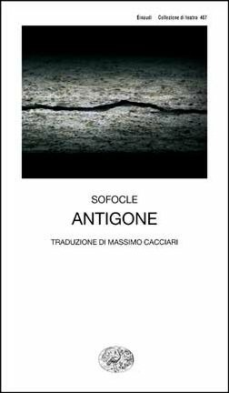
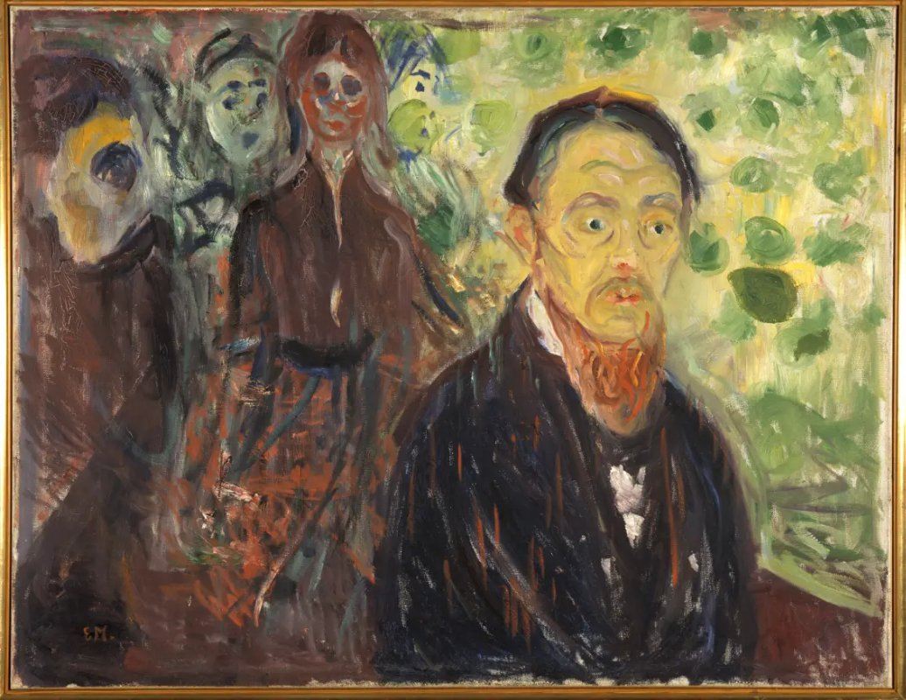

1:00:41 · 5 OPERE
Coraggio, disinformazione e marce militari a Berlino.
Il filo del discorso
La dedica a Sophie Scholl apre una riflessione sul coraggio come responsabilità personale e disponibilità a sostenere una convinzione anche senza vantaggio. Dr Divago ne legge passi e parole attribuite, accostando fermezza morale, spiritualità e critica dell’opportunismo; Kant e una probabile allusione all’Antigone ampliano questa prima parte. Il discorso passa poi a servizi televisivi e testimonianze sulla pandemia, che il relatore considera esempi di disinformazione. La scheda conserva la sua domanda sul rapporto fra immagini, parole e prove, distinguendola dalle accuse non accertate di minaccia, simulazione e coordinamento criminale. Il commento a un paziente non permette una ricostruzione clinica, mentre i numeri del Bayerisches Rotes Kreuz descrivono attività di un operatore in Baviera e non la mortalità tedesca. Nell’ultima parte le fiaccole a Berlino diventano occasione per discutere memoria e militarismo: vengono separati la cerimonia per l’Afghanistan e il commiato a Merkel, correggendo la sovrapposizione fra Reichstag e Bendlerblock. Taken by Surprise di Munch e il probabile richiamo al sonno della ragione di Goya chiudono il percorso con immagini di inquietudine, alle quali il relatore affida il proprio allarme sul presente.
I libri nel discorso
Lettere e diari
Copertina della raccolta: Itaca · Telemaco · edizione 2006, immagine della ristampa 2024
Copertina della raccolta epistolare e diaristica, pubblicata sul sito Itaca come ristampa 2024. Il video cita le lettere in generale e non identifica questa selezione, traduzione o ristampa.
Sophie Scholl e la lettura di un passo spirituale sono riconoscibili; raccolta, traduzione e lettera non sono identificate con certezza.
Passaggio 4:47 ↗ · Fonti e libro ↗
Critica della ragion pratica
Copertina: Bompiani, 2000
Kant e il motivo del cielo stellato e della legge morale; opera.
Passaggio 17:01 ↗ · Fonti e libro ↗
Antigone
Identificazione probabile
Copertina: Einaudi · Collezione di teatro · edizione di riferimento
Immagine associata all’ISBN di riferimento e controllata visivamente; edizione e traduzione non identificate come quelle citate o lette nel video.
Sofocle e la formula sull’uomo grandioso e terribile, coerente con il primo stasimo; titolo non pronunciato.
Passaggio 17:53 ↗ · Fonti e libro ↗
Taken by Surprise (Overraskelsen)
Riproduzione del dipinto dal catalogo MUNCH: Dipinto del 1907, olio su tela, 85,5 × 111 cm; MUNCH, MM.M.00537, Woll M 782.
Riproduzione autentica del dipinto, con cornice, fornita dal museo. Non è una copertina di libro e non certifica il preciso fotogramma mostrato nel video.
Edvard Munch, titolo tradotto del dipinto e anno 1907 espliciti.
Passaggio 59:10 ↗ · Fonti e libro ↗
Il sonno della ragione genera mostri (El sueño de la razón produce monstruos)
Identificazione probabile
Riproduzione della tavola 43 dei Caprichos: Los Caprichos, tavola 43, prima pubblicazione 1799; riproduzione dell’esemplare Wellcome 36752i.
Immagine autentica dell’incisione dalla Wellcome Collection, non una copertina libraria. L’opera è collegata probabilmente all’allusione; non è accertato l’esemplare mostrato nel filmato. La datazione della matrice e la pubblicazione della serie sono distinte.
Goya e il motivo del sonno della ragione; allusione coerente con la tavola 43 dei Caprichos, titolo completo non pronunciato.
Passaggio 1:00:00 ↗ · Fonti e libro ↗